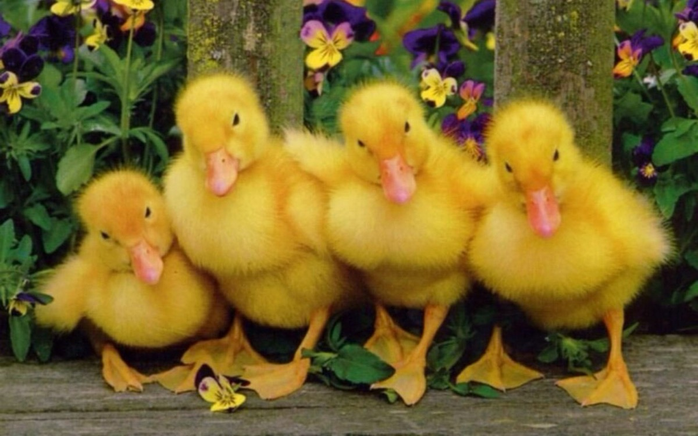

Rățuștele
Scena este pe o bancă
Ca toți din curte să vadă
Un spectacol cu decor
Și-o brigadă de umor
Mac-mac!...
Trei rățuște și-un rățoi
Frumoși, deștepți și vioi
Trei soprane și-un tenor
Măcăie în limba lor
Mac-mac!...
Rățuștele frumos rujate
Și cu unghiile tăiate
Spun cu glasuri de tenoare
Că rățoii mor de foame
Mac-mac!...
C-i puțin handicapat
De trei zile n-a mâncat
Și de-o ține tot așa
Îi vom cânta aleluia
Mac-mac!...
Rățoiul a făcut un salt
Și în teică s-a aruncart
Măcăind și înotând
Arătând că nu-i flămând
Și că nu-i handicapat
Mac-mac!...
Sunt de-acum rățoi bărbat!
Mac-mac!...
Vasile Groza
Apare și în: Poezii cu animale.